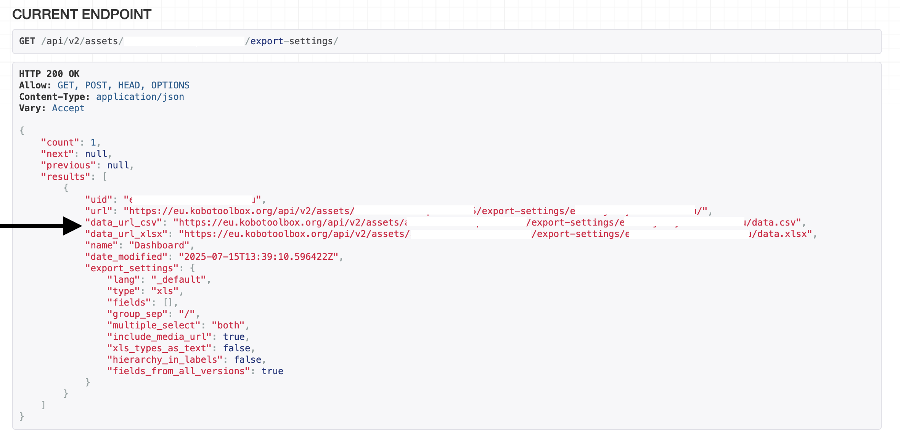

Parcourez la base de connaissances, explorez nos ressources et visitez notre Forum communautaire pour des informations plus détaillées
Dernière mise à jour : 22 Jun 2026
KoboToolbox propose deux méthodes principales pour accéder à vos données : les exports asynchrones et les exports synchronisés. La méthode asynchrone standard consiste à télécharger manuellement des fichiers de données contenant toutes les soumissions jusqu’au moment du téléchargement. En revanche, les exports synchronisés permettent l’intégration automatique de vos données KoboToolbox avec des applications externes telles que Microsoft Power BI, Excel ou Google Sheets.
Avec les exports synchronisés, vos données se mettent à jour automatiquement à chaque nouvelle soumission reçue, ce qui élimine la nécessité d’actualiser manuellement. Cette méthode fournit un fichier CSV ou XLSX, configuré selon vos paramètres d’exportation prédéfinis, qui peuvent inclure les libellés de questions, les langues, les filtres et les données de groupes répétés.
Note : Cet article porte sur les exports synchronisés, qui constituent l'une des deux principales façons d'utiliser l'API KoboToolbox. L'autre est l'API JSON, conçue pour les scripts personnalisés et les automatisations en temps réel, qui fournit des données JSON brutes, enregistrement par enregistrement. Contrairement aux exports synchronisés, l'API JSON ne dispose pas des fonctionnalités d'exportation avancées telles que les libellés de questions ou la disponibilité de plusieurs langues.
Cet article couvre les étapes suivantes :
Générer un export nommé
Récupérer le lien d’export synchronisé
Connecter vos données à une application externe et s’authentifier
Pour une introduction à l'API KoboToolbox, consultez l'article Introduction à l'API.
Pour générer des exports synchronisés, vous devez d’abord créer un export nommé pour votre projet en suivant ces étapes :
Dans votre projet KoboToolbox, accédez à l’onglet DONNÉES > Téléchargements.
Ajustez les paramètres d’exportation selon vos besoins.
Cliquez sur Options avancées pour personnaliser les données à exporter.
Choisissez Enregistrer la sélection sous… et donnez un nom à votre export.
Cliquez sur Exporter pour enregistrer ces paramètres.
Pour récupérer le lien d’export synchronisé, vous aurez besoin des éléments suivants :
UID du projet : Un identifiant unique pour chaque projet KoboToolbox, disponible dans l’URL du projet.
URL du serveur : L’URL du serveur que vous utilisez (kf.kobotoolbox.org pour le serveur KoboToolbox mondial, eu.kobotoolbox.org pour le serveur KoboToolbox Union européenne, ou l’URL du serveur privé de votre organisation).
Pour plus d'informations sur la récupération de l'URL du serveur et de l'UID du projet, consultez l'article Introduction à l'API.
Pour récupérer le lien d’export, suivez ces étapes :
Ouvrez un nouvel onglet dans votre navigateur.
Remplacez l”URL du serveur et l”UID du projet dans l’URL suivante : https://[server_url]/api/v2/assets/[project_asset_uid]/export-settings/.
Ouvrez la page web correspondant à l’URL modifiée.
Faites défiler jusqu’à la section CURRENT ENDPOINT.
Trouvez le paramètre d’exportation correspondant à l’export nommé que vous avez créé à la première étape.
Repérez les liens data_url_csv et data_url_xlsx, qui sont les liens d’export synchronisé de votre projet.
Copiez le lien qui correspond le mieux à vos besoins (fichier CSV ou XLSX).

Note : Les groupes répétés sont exportés sous forme d'onglets séparés dans les fichiers Excel et ne sont pas inclus dans les exports CSV. Si votre projet contient des groupes répétés, utilisez le lien data_url_xlsx.
Après avoir récupéré le lien d’export synchronisé, vous pouvez connecter vos données à l’application externe de votre choix. La méthode d’intégration du lien d’export synchronisé varie selon l’application.
Pour apprendre à connecter vos données à Power BI afin de créer des tableaux de bord personnalisés, consultez l'article Connexion de KoboToolbox à Power BI.
Pour apprendre à connecter vos données à Microsoft Excel, consultez l'article Connexion de KoboToolbox à Microsoft Excel.
De nombreuses applications externes peuvent se connecter à vos données KoboToolbox. Cependant, toutes n’autorisent pas les requêtes authentifiées, c’est-à-dire les requêtes qui transmettent des identifiants (par exemple, la clé API ou le nom d’utilisateur et le mot de passe) afin que le serveur puisse vérifier l’identité de l’appelant. Si l’application externe n’autorise pas les requêtes authentifiées, elle ne pourra accéder qu’aux ressources rendues publiquement accessibles via un lien d’export anonyme.
Pour connecter votre projet sans authentification (par exemple, à Google Sheets), vous devez vous assurer que l’option « N’importe qui peut afficher les soumissions de ce formulaire » est cochée dans PARAMÈTRES > Partage.
Pour plus d'informations sur le partage de projets, consultez l'article Droits d'accès au niveau du projet.
Pour les projets contenant des données sensibles ou privées, l’option « N’importe qui peut afficher les soumissions de ce formulaire » doit rester décochée. Dans ces cas, envisagez d’utiliser uniquement des applications autorisant les requêtes authentifiées.
Lorsque vous utilisez des applications autorisant les requêtes authentifiées, comme Power BI, il vous sera demandé de fournir une authentification de base avec votre nom d’utilisateur et votre mot de passe, ou un jeton (également appelé clé API) pour accéder aux données. Votre clé API se trouve dans vos PARAMÈTRES DU COMPTE, sous l’onglet Sécurité.
Pour plus d'informations sur la clé API, consultez l'article Introduction à l'API.
Afin de garantir la fiabilité du serveur, les exports synchronisés sont soumis aux limitations suivantes :
Intervalle d’actualisation des données : Les données des exports synchronisés se mettent à jour toutes les 5 minutes. Les demandes d’export effectuées dans cette fenêtre de 5 minutes n’incluront pas les nouvelles soumissions reçues durant cet intervalle.
Délai de génération de l’export : Les exports doivent se terminer dans un délai de 120 secondes. Les projets comportant un grand nombre de soumissions ou de questions peuvent échouer. Pour éviter cela, ajoutez une contrainte de requête dans les paramètres d’exportation afin de limiter les soumissions ou d’exclure les questions non nécessaires. Consultez ce post du Forum communautaire pour obtenir des conseils.
https://kc.kobotoolbox.org/media/original?media_file=...
Avez-vous trouvé ce que vous cherchiez ? La traduction était-elle claire ? Manquait-il quelque chose ?
Partagez vos commentaires pour nous aider à améliorer cet article !
KoboToolbox est maintenu par Kobo Inc.